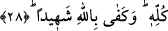

28. Bütün dinlerden üstün kılmak üzere, Peygamberini hidayet ve hak din ile
gönderen O’dur. Şâhid olarak Allah yeter.
Allah Teâlâ zâtının celâli ve şânının yüceliği ile kendisine izafe edilmeye ondan daha
lâyık hiçbir peygamberin olmadığı Hz. Muhammed (s.a.)’in gönderilişini
“peygamberine” buyurarak kendi zâtına izafetle beyan etmiştir.
Âyetteki “hidâyetle” ifadesi Peygamber Efendimiz (s.a.)’in tevhîd üzere olduğunu
haber verir. Mânâsı “Allah peygamberini, tevhidi yerleştirmek ve insanlara doğru yolu
göstermek için gönderdi.” olur.
“Hak din” ifadesinde “hak” kelimesi “kendisi sâbit olup diğer dinleri nesh ve iptal
eden” anlamına gelir.
Âyetin bu kısmı “hak din olan İslâm’ı tüm dinlere, o dinlerdeki doğru olan bazı
hükümleri, bunların üzerinden epey zaman geçmesi sebebiyle değiştirilmesi gerektiği
için nesh ederek, bâtıl olan hükümlerin de geçersizliğini ortaya koyarak üstün ve galip
kılmak için” demektir. Yine bu ifadede “müslümanları diğer din mensuplarına hâkim
kılarak İslâm’ı bütün diğer dinlere üstün ve galip kılmak için” anlamı da vardır.
Cenâb-ı Hak, bu vaadini gerçekleştirdi. Nitekim İslâm haricinde yeryüzünde hiçbir
din kalmadı. Hepsi İslâm karşısında mağlup ve makhûr oldu. İnsanlar ya müslüman
oldular, ya da müslümanların himâyesinde zimmî olmak durumunda kaldılar. Nice
beldelerin müslümanlar tarafından fethedildiği, nice kuvvetli kralların perişan
edildikleri görüldükçe Allah Teâlâ’nın güç ve kudreti daha da iyi anlaşılmaktadır.
Âyet-i kerimede mü’minlere fetihlerin ve bir kısım toprakları vatan edineceklerinin
vaad edilmesinde, Allah Teâlâ’nın onlara pek çok beldelerin fethini müyesser
kılacağının ve onları bütün iklimlere galip kılacağının kesin ve tekidli bir müjdesi
vardır. Onlar tüm bu fetihlerin yanında Mekke’nin fethini az ve küçük göreceklerdir.
Nitekim az önce işâret ettiğimiz gibi Allah Teâlâ bu vaadini gerçekleştirmiştir.
Şunu bil ki Allah Teâlâ’nın “üstün ve galip kılmak için” sözü, peygamber
göndermesini gerekli kılan sebebi ortaya koymaktadır. Buradaki “lam” edatı, şer‘an
hikmet ve sebep, aklen illet bildirir. Çünkü Eş‘arîlere göre Cenâb-ı Hakk’ın fiilleri
gayelerle muallel değildir. Ancak Allah’ın fiilleri, neticesi itibariyle pek çok hikmeti
içerisinde barındırır. Gayenin semereden önce gelmesi, maksadın kastedilenden önce
gelmesi yerine konulmuştur.
“Bütün kemâl sıfatlarla muttasıf olan Allah Teâlâ, vaad ettiğinin mutlaka
gerçekleşeceğine şâhid olarak yeter” veya “Hz. Muhammed (s.a.)’in peygamberliğine -
kâfirler şâhidlik etmese de- mûcizeler göstermek suretiyle şâhid olarak Allah yeter”
demektir.
İbn Abbâs (r.a.)’tan, buradaki şâhidliğin hemen bir sonraki âyetle de irtibatlı olarak
Hz. Muhammed (s.a.)’in peygamberliğine dâir bir şâhidlik olduğu görüşü,
nakledilmiştir.